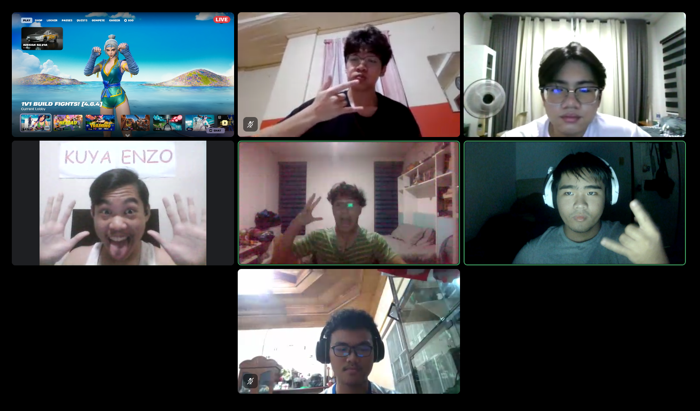
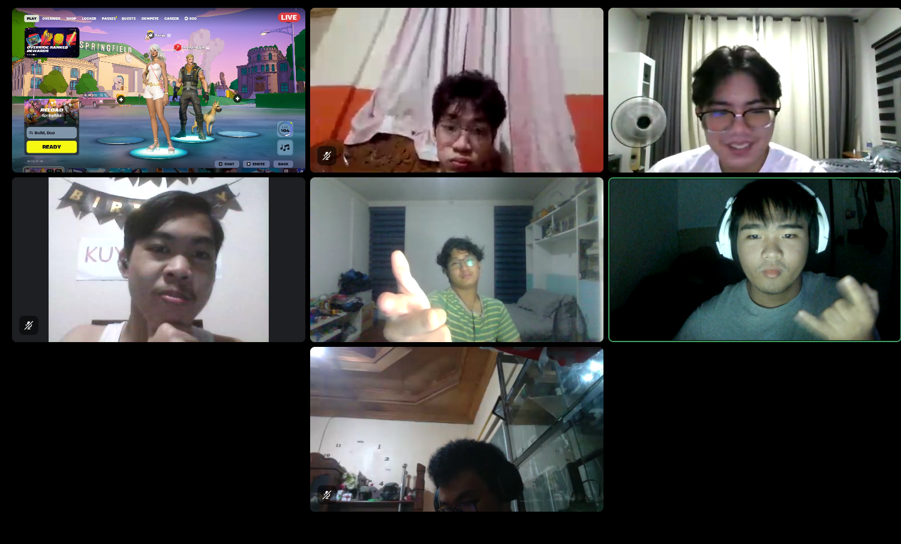

Facilitation
Details of the actual group process observation, with photo and video evidence.
On August 29, 2026, the scheduled group observation was conducted, capturing the interaction of players in the game Fortnite across two sessions. Data was collected in the form of gameplay and voice-chat recordings, captured and edited by Paolo Eli C. Bautista, while Gian Adel Bert S. Afable, Anekein Caldae H. Garcia, Lorenzo S. Mercado, Gieul Samuel Montefalco, and Matteo Andres R. Redillas observed the communication of the players through a Discord call where the gameplay was screen-shared by Paolo Eli C. Bautista.

